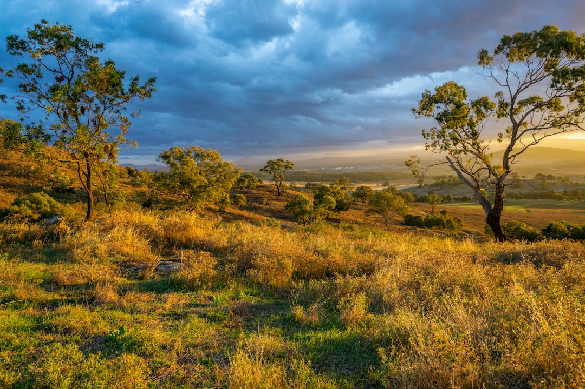

Canberra tree work starts with 4 checks: ownership, protected status, practical access and written scope. The source guide identifies 6 service routes, removal, pruning, stump grinding, arborist assessment, emergency tree work and hedge trimming. It also sets out 4 comparison proof points: ACT rules, written inclusions, alternatives to removal and provider-level proof. Price is not reliable from height alone, so useful enquiries need photos, access notes and nearby asset details.
For homeowners comparing tree removal services canberra options, the useful first step is to separate approval checks, tree condition, access constraints and the written scope expected from a provider.
Tree Removal Services Canberra Explained
Top Tree Removal Canberra frames the first decision as a status and scope question, not a promise that removal is always the right answer. The published guide says removal may suit a dead, structurally compromised or unsuitable tree, but also keeps pruning, deadwooding, arborist assessment, storm-damage triage, stump work and hedge maintenance in view.
That order matters in the ACT because the guide says all public trees are protected, and a private tree may also be protected under the Urban Forest Act 2023. It specifically points readers to current City Services ACT guidance and ACTmapi before arranging major work. A dead native tree is still treated as something to check carefully, rather than as automatic clearance.
The practical result is a slower but cleaner brief. Before asking for a quote, record whether the tree is private or public, whether protected status has been checked, and what outcome is actually needed. For a narrower companion overview, see this Canberra tree removal planning guide.
Who This Applies To
This guide is for Canberra property owners, tenants preparing an enquiry for an owner, strata decision makers and anyone trying to describe a tree issue before speaking with a contractor. It is most useful where the job might involve a protected tree, a public verge tree, difficult access, nearby roofs or fences, visible lines, stump decisions or green waste disposal.
- Private tree owners: check ownership, protected status and the desired result before asking for removal.
- Public tree concerns: the source guide says residents must not prune or remove street trees themselves.
- Storm or fallen tree situations: keep people clear of an unsafe area and treat overhead or fallen electrical lines as a separate hazard.
- Quote comparers: ask each provider to write down method, approvals, credentials, insurance, inclusions, exclusions and site repair.
The page is not a substitute for provider proof. The source guide is explicit that licences, insurance, memberships and availability belong to the actual operator being considered.
Choosing The Work Type
A useful brief separates the tree problem from the preferred treatment. Removal is only one route. Selective pruning can suit deadwood, clearance or canopy objectives. Stump grinding needs its own scope because depth, access, surface roots, grindings and backfill can affect how the area is reused. An arborist assessment can be the right step where health, risk, protected-tree or development questions are unresolved.
For hedge and smaller-tree maintenance, the guide says dimensions, access, desired finish and green waste should be defined. For urgent tree work, the published wording focuses on fallen or storm-damaged trees, electrical risk and make-safe scope. Those details stop one quote from silently including work that another excludes.
A good enquiry should show the whole tree, trunk, access path and surrounding constraints. Nearby roofs, fences, services, slope and visible lines are not side details. They shape method, equipment choice, clean-up expectations and whether a provider can respond with a useful written answer.
What To Put In The Enquiry
The source guide asks for the suburb, the tree issue, access path and nearby structures. It also says photos can be provided later if a provider asks for them. A stronger first message includes whole-tree photos, trunk photos, gate or access width, visible slope and the outcome wanted, such as clearance, full removal, stump grinding, mulch, logs left on site or final clean-up.
Keep the request divided into parts. A tree removal services canberra enquiry that blends removal, pruning, stump disposal and waste into one sentence is harder to compare. Separate the protected-status note, the visible site constraints, the requested work and the clean-up expectation.
- State whether ownership or protected status has been checked.
- Describe why the work is being considered, such as deadwood, clearance, storm damage or an unsuitable tree.
- List access limits, nearby assets and visible lines.
- Ask for written inclusions, exclusions and provider proof before choosing.
Comparing Written Quotes
Height alone is not a reliable price guide according to the source text. Canopy, trunk, access, protected status, nearby assets, stump work and waste all change the scope. The safer comparison is like for like: method, approvals, credentials, insurance, inclusions, exclusions and site repair in writing.
Ask whether pruning is a valid alternative, whether an assessment is needed before a final decision, and whether stump grinding is included or separate. If public land or protected status is uncertain, ask the provider how that uncertainty should be resolved before major pruning or removal. If storm damage is involved, ask what the make-safe scope includes and what remains outside it.
The final check is proof at provider level. The published guide does not borrow an unnamed operator's licence, insurance, memberships or project history. That is the correct standard for readers too: treat every claim about qualifications, availability and cover as something the actual provider must confirm.
- Check ownership. Confirm whether the tree is private or public before arranging any major work.
- Check protected status. Use current City Services ACT guidance and ACTmapi where protected-tree status may apply.
- Document the site. Photograph the whole tree, trunk, access path, nearby structures, slope and visible services.
- Separate the scope. List removal, pruning, stump grinding, green waste and clean-up as separate inclusions.
- Compare written responses. Ask providers to confirm method, approvals, credentials, insurance, exclusions and site repair in writing.
| Situation | Likely next question | Scope detail to confirm |
|---|---|---|
| Possible protected or public tree | Has status been checked with current ACT guidance? | Ownership, ACTmapi check and any approval pathway |
| Dead, unsuitable or compromised tree | Is removal justified, or is assessment needed first? | Method, access, nearby assets, stump and waste |
| Clearance or canopy issue | Would selective pruning meet the objective? | Deadwood, clearance target and pruning standard expectation |
| Fallen or storm-damaged tree | Is urgent make-safe work required? | Electrical risk, exclusion zone and what remains after triage |
Common questions
Does every Canberra tree problem need removal? No. The source guide says removal may suit some dead, structurally compromised or unsuitable trees, but pruning, deadwooding, assessment, stump work and hedge maintenance can also be relevant.
Can residents prune or remove a street tree themselves? The source guide says residents must not prune or remove public street trees themselves. Public-tree issues should be handled through the appropriate ACT process.
What makes a quote easier to compare? Ask for the method, approvals, credentials, insurance, inclusions, exclusions and site repair in writing. Also separate stump work, waste handling and final clean-up from the cutting work.
Is tree height enough for a price? No. The source text says there is no reliable price from height alone. Access, canopy, trunk, nearby assets, stump requirements, waste and status checks can all affect the written scope.
This guide covers Canberra tree-work planning, protected-status checks, access notes, service selection and written quote comparison.